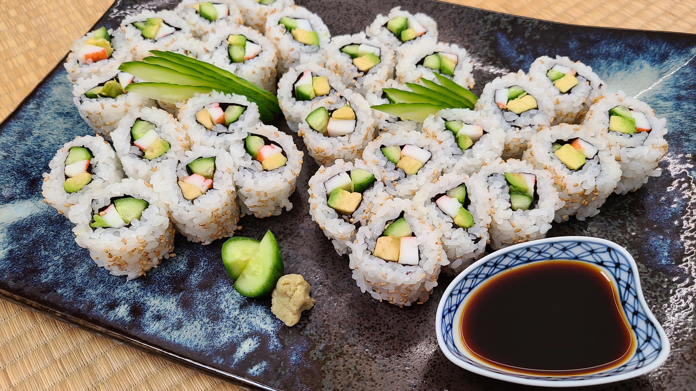

Sushi!! 🍣

Description
This sushi recipe is a fun introduction to making homemade rolls! It's simple,
fresh, and doesn't require special equipment. Perfect for beginners who want
to try making their own Japanese-style sushi at home
Ingredients for this recipe
- Two cups sushi rice
- 3 tbsp rice vinegar
- 1 tbsp sugar
- 1 tsp salt
- Nori sheets (seaweed)
- Fresh fillings (cucumber, avocado, crab stick, or salmon)
- Soy sauce, pickled ginger, and wasabi for serving
Steps for the sushi! 🍣
- Cook the sushi rice according to package directions
- Mix rice vinegar, sugar, and salt, then fold into the cooked rice
- Lay one sheet of nori on a bamboo mat (or clean surface)
- Spread rice evenly over the nori, leaving a 1-inch border at the top
- Add fillings (like cucumber, avocado, or crab) in a line across the rice
- Carefully roll the sushi tightly using the mat
- Slice into 6–8 pieces with a sharp, wet knife
- Serve with soy sauce, wasabi, and pickled ginger. Enjoy!
Home